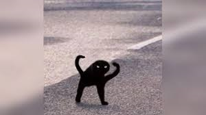
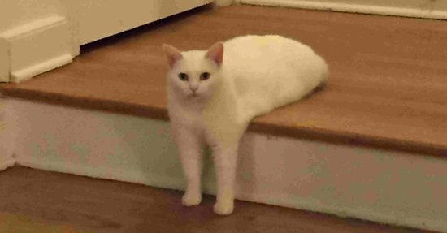
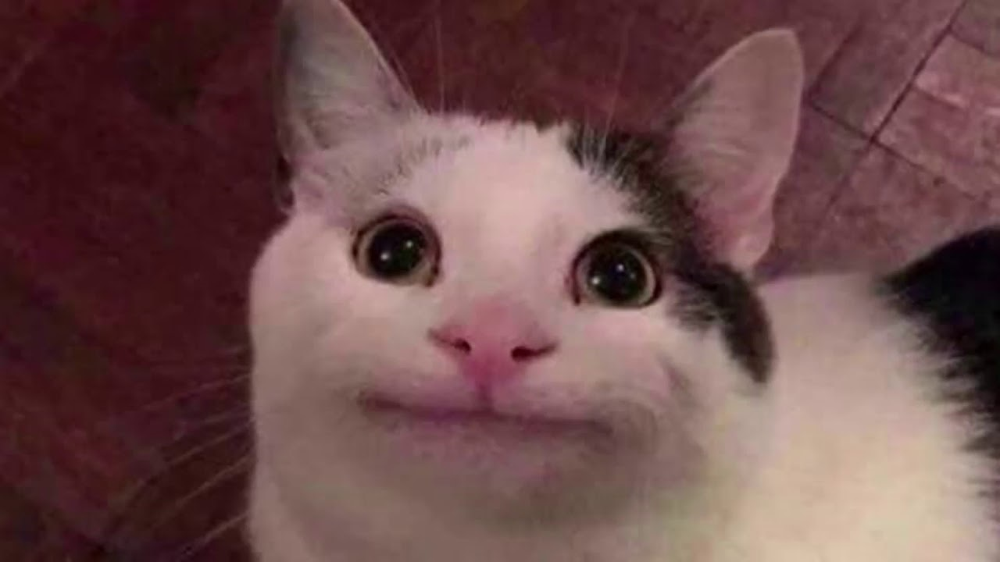

Here, we see encapsulated the range of emotions that express the
vividness of life. The high levels of grump seen in the cat's facial
contortions are indicative of the contortions of truth that we seem
to unquestionably abide by in society. We believe our lives to be
truthful and good in an objective sense, thus escaping the real depths
of volatility that the narrowly avoid every-day. This vanity of ours
likens that of the feline in the piece in question, particularly in
the distinctly contransting combination of a confident smirk and cowering
posture.
Feline Comedy, Inferno
Anger, fear, disgust: these are plight of true happiness; these are
the paths that take mankind, or in this case catkind, into despair.
What's more, the root of these evils are nigh impossible to find,
or even grasp. This portait of reified pain, however, comes close
to the source of this anguish. The cat in this picture demnsntrates
a hightened awareness on his strenous circumstances. This forces him
to partially close his eyes, so as to retreat to a calmer metaphysical
space, so as to see with greater clarity the path that awaits him out
of the surrounding Hell.


The Abyss
A comparatively less complex work. However, we musn't conflate
simplicity with banality, just as one shouldn't conflate essence
with perception, object with shadow. The cat in question stares at
the viewer with the same intensity that someone would their lover, or
even the person that their lover has betrayed them with. The aim of
this is to break down the barrier that exists between viewer and
viewed: in a sense we see the destruction of the imaginary lining
of the canvas, like a seal ready to break open and flood reality
with it's boundless chaos. The imaginary is ready to conquer the real,
and all it takes is for someone to look into the work of art as, like
the Nietzschean abyss, it will stare back.
Feline Comedy, Inferno
Anger, fear, disgust: these are plight of true happiness; these are
the paths that take mankind, or in this case catkind, into despair.
What's more, the root of these evils are nigh impossible to find,
or even grasp. This portait of reified pain, however, comes close
to the source of this anguish. The cat in this picture demnsntrates
a hightened awareness on his strenous circumstances. This forces him
to partially close his eyes, so as to retreat to a calmer metaphysical
space, so as to see with greater clarity the path that awaits him out
of the surrounding Hell.